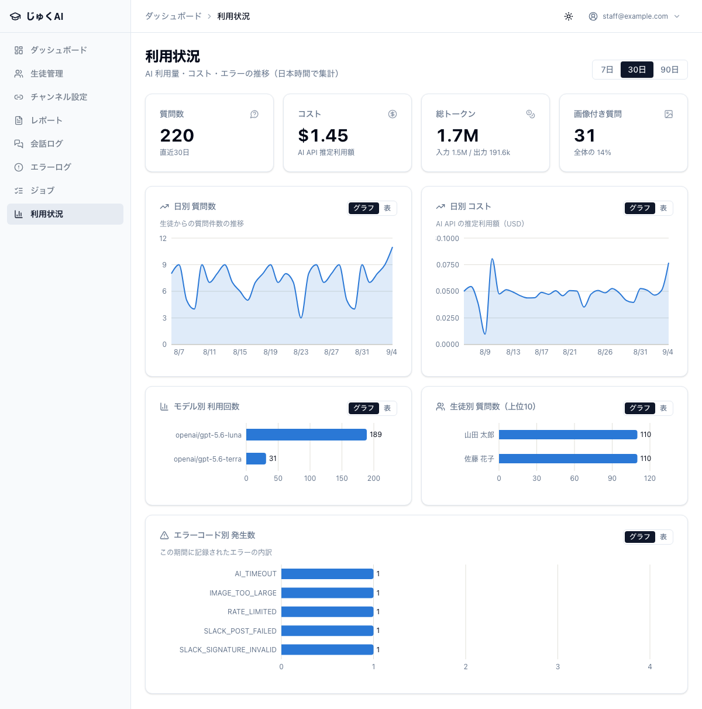

この章で分かること
この章はアプリの紹介も兼ねています。新しく入ったスタッフや、外部に説明するときに使ってください。
じゅくAI は「Slack の中にいる、その生徒専用の学習相談相手」です。 生徒が自分のチャンネルで質問すると、学年・スタッフが書いた学習メモ・承認済みの月次レポート・ これまでのやり取りを踏まえて答えます。質問は写真でもできます。 答えを丸写しさせるのではなく、考え方から説明する方針で作られています。
スタッフが書いた AI 用プロフィール（全体要約・学習スタイル・得意・苦手・指導上の注意）と 学年 を、 毎回の回答で参照します。同じ質問でも、中 1 の生徒と高 3 の生徒には違う深さで答えます。 「答えをすぐ出さないでほしい」といった指導方針も反映されます。
→ 質を上げる方法は 第 3 章 3-2
承認済みの月次レポートの中から、その質問に関係のある部分だけを探し出して回答に使います。 回答には「今月のレポートを見る限り〜」のように、どこから持ってきた情報かが分かる形で現れます。
→ 使えるようにする手順は 第 4 章
数式・問題・ノートの写真を送って質問できます。手で打ち直す必要がありません。
| 項目 | 条件 |
|---|---|
| 形式 | jpg（jpeg）・png・webp |
| 枚数 | 1 回のメッセージに 3 枚まで（4 枚目以降は使われず、回答にその旨が添えられます） |
| サイズ | 1 枚 20MB まで |
| 読めないもの | PDF・Word・Excel・音声・動画 |
写真を送ると、撮影場所などの埋め込み情報を取り除いてから処理します（第 7 章 7-4）。
一度じゅくAI が答えたスレッドの中では、@じゅくAI を付けずに会話を続けられます。
「そこがまだ分からない」「じゃあこの場合は？」と自然に続けられます。
やり取りが長くなった場合は、前半を自動で要約して文脈を保ちます（話が最初から分からなくなることはありません）。
試験期間を設定した生徒には、その期間だけ確認の質問をはさまず、要点をすばやく伝える回答に切り替わります。 最終日を過ぎれば自動で元に戻ります。
→ 第 3 章 3-3（設定は任意です）
「伴走者」としてふるまうよう作られています。
| 画面 | 見えるもの |
|---|---|
| ダッシュボード | 今日の質問数 / 今月のコスト / 未対応エラー / 生徒数 / 最近のエラー |
| 利用状況 | 期間を選んで、質問数・コスト・使用量・画像付き質問の割合と、その推移 |
| 会話ログ | 生徒と Bot のやり取りの全記録（生徒・期間・画像・エラーで絞り込み可） |
| エラーログ | 失敗した処理と、生徒に返した文面、対応記録 |
| ジョブ | 質問の処理が詰まっていないか |

管理者はボタン 1 つで全生徒への AI 回答を即座に止められます。止めている間は AI が呼ばれないので、費用も止まります。 → 第 7 章 7-1
生徒 1 人あたり 1 時間に 10 回までという上限が入っています。 特定の生徒の使いすぎで費用が膨らむことを防ぎます。→ 第 7 章 7-2
ここは期待のずれを防ぐために正直に書いています。 「できるはず」と思って待っていると業務が止まるので、下記は人の手で行う前提で運用してください。
| できないこと | 現状どうするか |
|---|---|
| 月次レポートの AI 自動生成 「その月の会話から AI がレポートの下書きを作る」機能はありません |
スタッフが手で書きます。書いたレポートを承認すれば AI はきちんと参照します （AI が書いたものと参照データとしては同じ扱いです）。→ 第 4 章 |
| 承認したレポートの生徒への自動送信 承認しても Slack には投稿されません |
生徒・保護者への配布は、これまでどおり塾の方法（面談・紙・メールなど）で行ってください |
| 保護者へのメール通知 生徒情報に「保護者メール」欄はありますが、メールを送る機能はまだありません |
保護者メールは記録用として保存されるだけです。連絡は従来の方法で |
| 対話的に導く問いかけ（ソクラテス式） 「まず自分で考えてみよう」と確認の質問を返す進め方は、いまは動きません |
現在はどの生徒にも「直接説明する」形で回答します。 概念をやさしく説明し、例題を示す進め方です。 考え方から説明する方針（丸写しを避ける）は効いていますが、問いかけて導く形にはなりません |
| エラーが起きたときの自動通知 エラーが出ても Slack に通知は飛びません |
だから毎日ダッシュボードを見る運用が必要です。 自動通知があるのは緊急停止の操作だけです。→ 第 2 章 |
| 生徒一覧での「最終利用日時」「今月の質問数」 | 利用状況 の画面で、生徒別の内訳として見られます |
| 生徒詳細ページでの利用推移グラフ・レポート一覧 | 利用状況（推移）とレポート管理（生徒で絞り込み）を、それぞれ開いて見てください |
| PDF・Word・Excel・音声・動画の読み取り | 画像（jpg / png / webp）だけです。PDF なら該当ページを写真に撮って送ってもらいます |
| 紐付けたチャンネル ID と生徒の後からの変更 | 変更できるのは表示名とステータスだけです。作り直します（第 3 章 3-7） |
| 1 つのチャンネルを複数の生徒で共有する | 1 チャンネル = 1 生徒です。兄弟でも別チャンネルを作ってください |
| 質問回数の上限を画面から変える | プログラムの変更が必要です。変えたい場合は開発者に相談してください |
| 生徒が管理画面を見る | できません（そうすべきでもありません）。生徒が触るのは Slack だけです |
そのまま読み上げたり、書面に写して使える文です。
当塾では、お子さま専用のチャットで学習の質問に答える AI を導入しています。 お子さまは Slack のご自身のチャンネルから、いつでも文章や問題の写真で質問できます。 この AI は、講師が記録した学習の状況と、毎月の学習レポートを踏まえて答えます。 答えをそのまま写させるのではなく、考え方から説明する方針で運用しています。 やり取りはすべて塾側で確認でき、内容は講師が定期的に見ています。
AI に渡しているのは、学年・講師が書いた学習メモ・質問の内容・承認済みの学習レポートの一部です。 お子さまの氏名は AI に渡していません。 写真をお送りいただいた場合も、撮影場所などの情報を取り除いてから処理しています。 やり取りは塾の管理画面から確認でき、他の生徒の情報が混ざることはありません。
→ 詳しくは 第 7 章 7-3。質問を受けたときはそちらの表を見てください。
AI の答えの質は、管理画面に書く AI 用プロフィールと月次レポートの質で決まります。 「頑張っている」のような言葉では AI は何も変えられません。 「どの単元で、どういうつまずき方をするか」を書いてください。 生徒の氏名は書かないでください（AI にそのまま送られます）。
質問するときは @じゅくAI を付けて書いてね。
返事が来たら、その下（スレッド）で続けて聞けるよ。2 回目からは @じゅくAI はいらないよ。
問題の写真を送ってもいいよ（1 回 3 枚まで）。
やり取りは先生も見られるから、分からないところは遠慮しないで聞いてね。